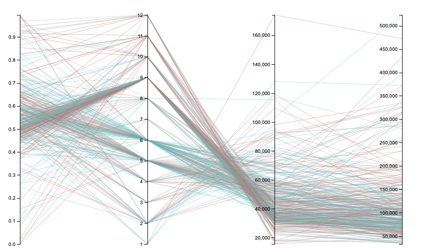

Jaden's Homework 2
Welcome to my homework 2
Check out my plot below!

Data
This data set was found opportunityinsights.org. I used the online data table 2 titled: Baseline Cross-Sectional Estimates of Child and Parent Income Distributions by College.
"This data is publicly available data Opportunity Insights produced and replication code: License is here.
Wrangling
For this chart I actually did a lot of wrangling. First I just got the entries that the state was either California or New York. I then deleted all the columns that I didn't need (most of them).
Once I loaded my CSV I then shuffle the array using my shuffle funtion and then grab the first 100 entries in my data array.
function shuffle(array) {
array.sort(() => Math.random() - 0.5);
}
data.slice(0,100); // get me the first 100 item of my data array
Visualizations
Prototype
Here is the prototype that I made from my dataset using rawGraphs.

Insparation
Custom Parallel Insparation
Parallel Insparation/
Parallel Coordinates Insparation
Parallel Coordinates Insparation
Grade
| Letter |
Done? |
Description |
| A |
|
I made a parallel coordinates plots in rawGraphs and D3. |
About

Jaden Hamid
CS Major, University of San Francisco
Expected Graduation: May 2021
jnhamid@dons.usfca.edu
Hi all, I'm Jaden Napali Hamid. I'm a 20 year old kid from Kauai, HI. I got into coding ny taking a computer science class Freshmen year of highschool. I also have been surfing since I was 4.
Skills
Python
C
Java
JavaScript
HTML
CSS